Hounds, ogres and imps A3
Your three front/back sheets: 4 refined (Spearling, Grey Pack Hunter, Bone Hound, Ember Hound) and 7 new (Knifer, Slinger, Mastiff and four ogres). Refined ones show before and after; new ones show the game sprite. The new monsters don't spawn yet: the main chat sets where they appear and their stats. Every other monster renders exactly as before, including the Warlord, Alpha, Bear and Boar.
Imps: fallen kin
Fallen Spearling
refined · game id fallen · 2 passes (pass 1 pauldron too big)
The Fallen One. Added a leather pauldron on the right shoulder with a strap across the chest, and the spear now rests low across the body in both hands, as in your concept.
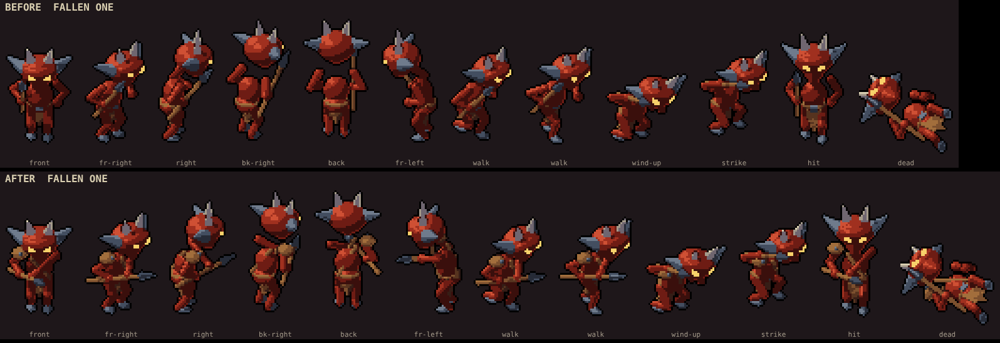
Fallen Knifer
new · game id knifer · 2 passes (pass 1 blade too small)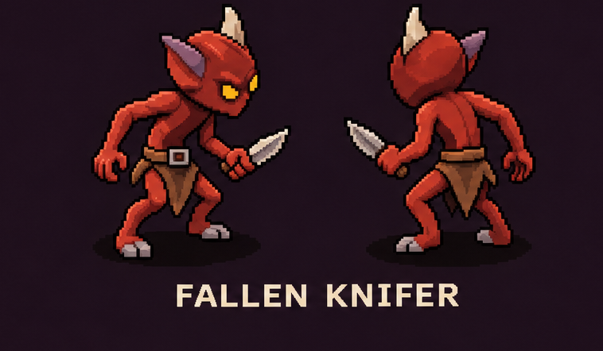
The same imp with a broad short knife held low and forward and the off hand clawing. Melee pounce like the Fallen One.
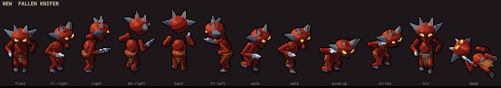
Fallen Slinger
new · game id slinger · 3 passes
Leather capelet with a bone clasp, a pouch of stones at the left hip, and a sling hanging from its fist; to shoot it whirls the sling high and lets fly. The weakest of this round: a sling is thin at this size, so it reads best in the angled views.
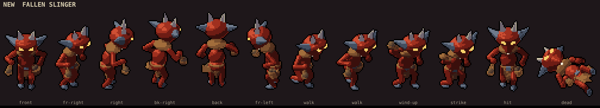
Ember Acolyte
done before · game id shaman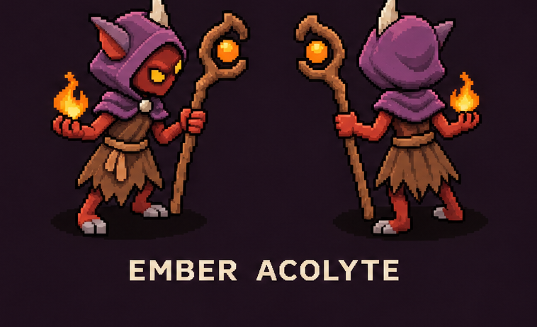
Built last round from your first concept. The back view matches what we drew, so no changes.

Hounds: pack variants
Grey Pack Hunter
refined · game id wolf · 1 pass
The Wolf: a small change, a pale muzzle. It was already close to the concept.
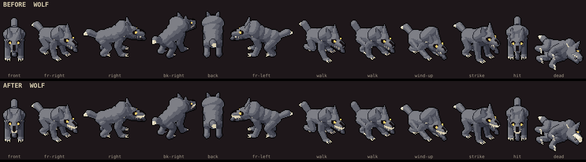
Bone Hound
refined · game id hound · 1 pass
The ribs and spine spikes are replaced by four flat bone plates standing along the back, and it has a furred tail with a pale tip. The red scarf, gold bell and skull head stay.
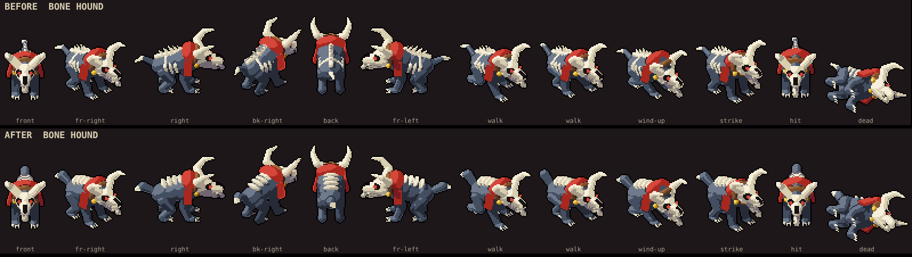
Ember Hound
refined · game id ghoulhound · 1 pass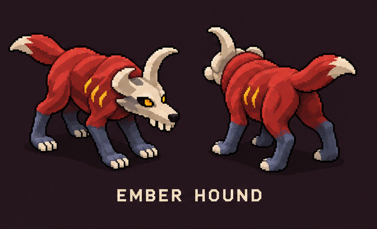
The Hell Hound: glowing ember slashes on both flanks, dark slate lower legs, a furred red tail with a pale tip; no scarf or ribs.
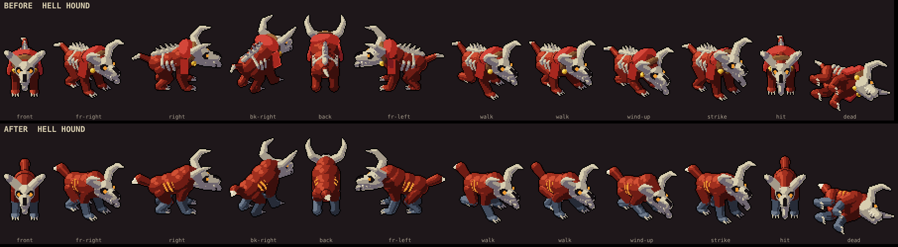
Brigand Mastiff
new · game id mastiff · 2 passes (pass 1 had a black stripe down the face)
A stocky brown dog: thick legs, droopy ears, a short wide muzzle with jowls and a big nose, a studded collar and a tail curled up over its back.
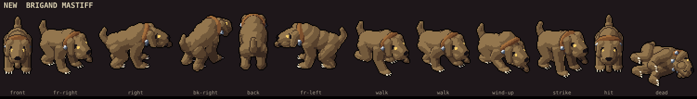
Ogres: warlord’s kin
Ogre Clubber
new · game id oclubber · 3 passes, shared by all four ogres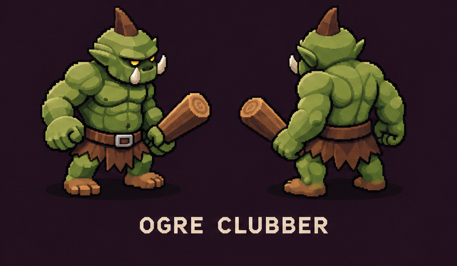
A log club with a pale cut end, a belt with an iron buckle, and a torn leather skirt.
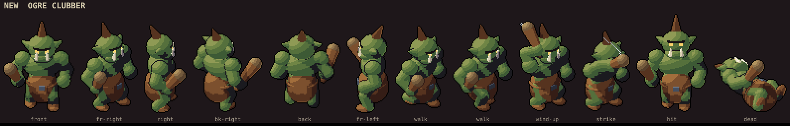
Ogre Rockthrower
new · game id orockthrower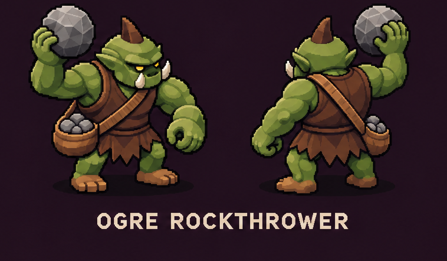
A rock held up beside its head, a leather vest, a strap across the chest and a bag of rocks at the hip. Throws on its shoot clip.
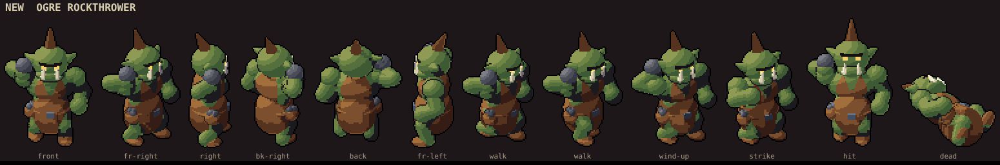
Ogre Shieldbearer
new · game id oshield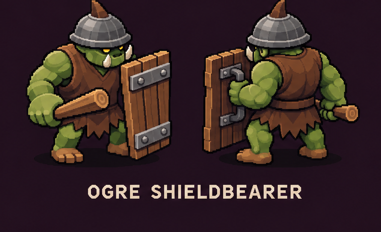
An iron kettle helm with the top-knot poking through, a vest, a club, and a plank shield with two iron bands.
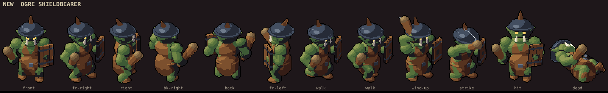
Ogre Enforcer
new · game id oenforcer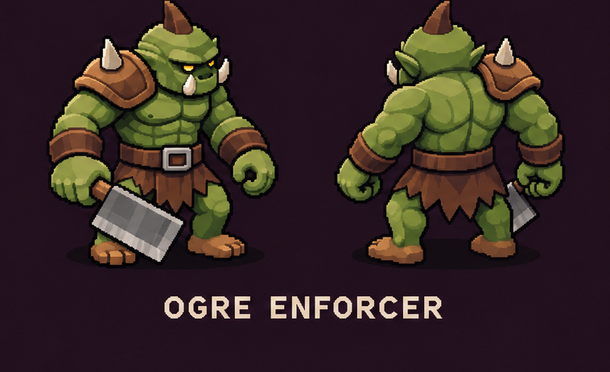
Leather pauldrons with bone spikes, leather bracers, and a heavy square cleaver held low.
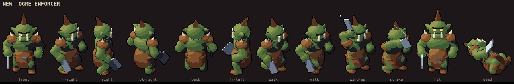
Every pass
the review loopImps: pass 1, then 1 vs 2, then the slinger 2 vs 3
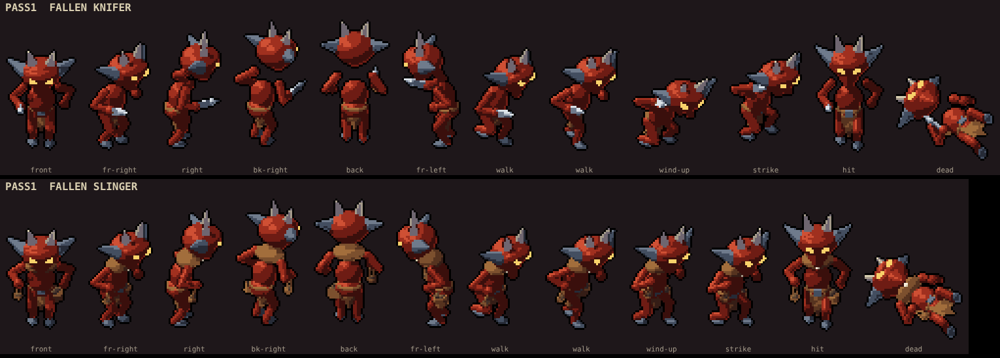
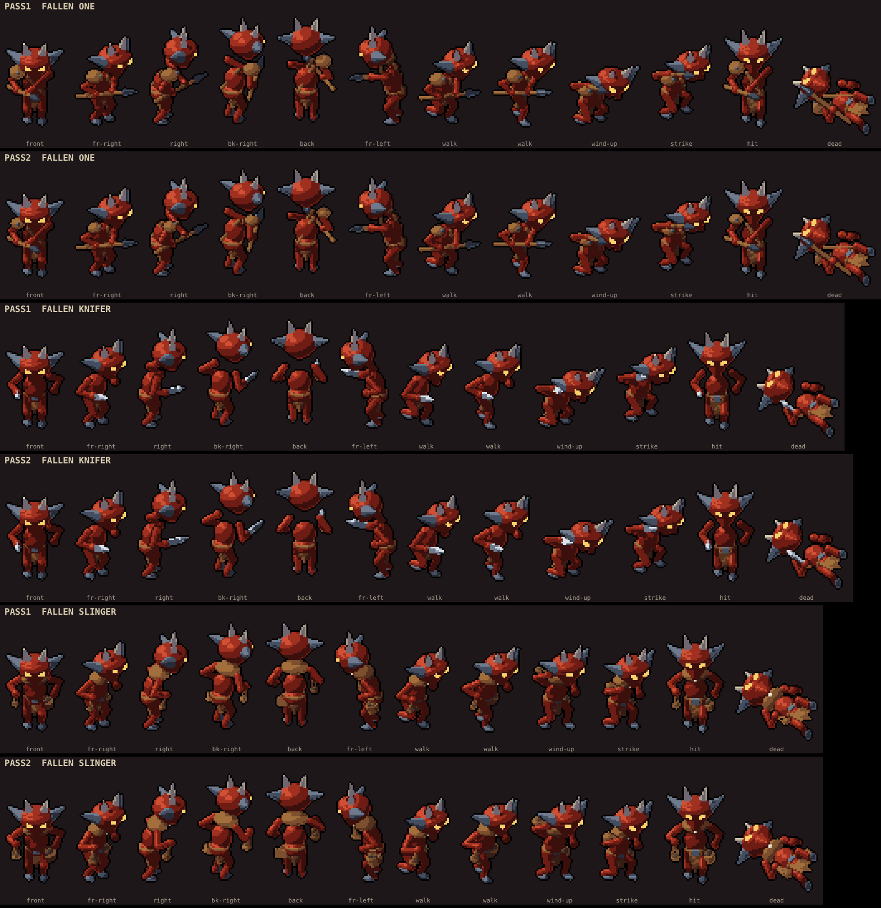
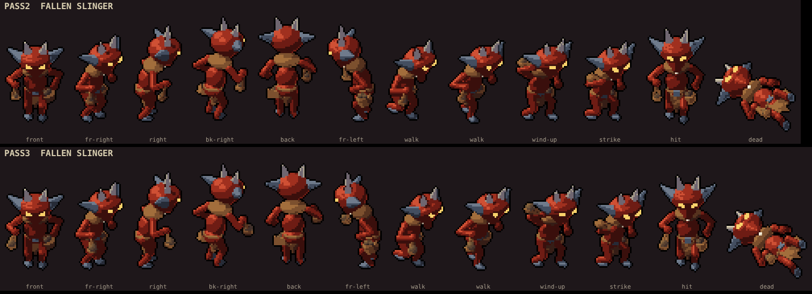
Mastiff: pass 1 vs 2
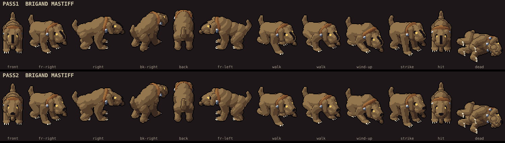
Ogres: pass 1, 1 vs 2, 2 vs 3
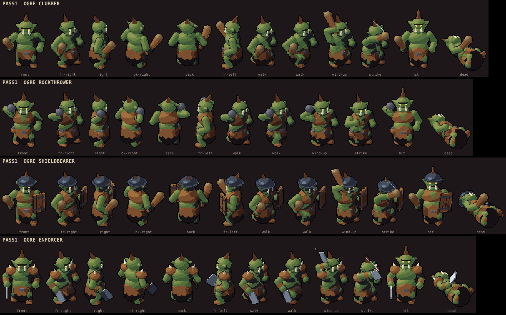
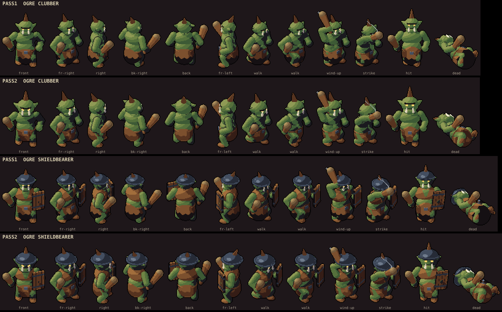
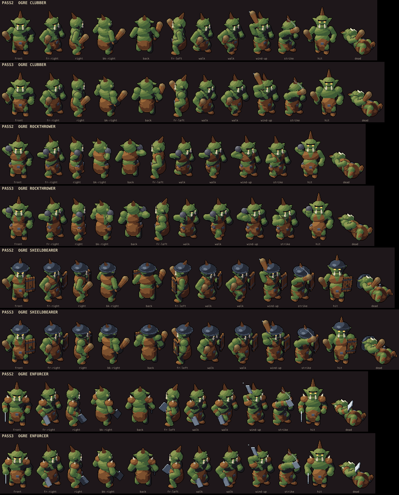
Notes
- The Slinger and the Rockthrower shoot the game's arrow for now. A stone or rock projectile is the main chat's to add.
- Keep, tweak or reject each one; name the frame or part if something's off.